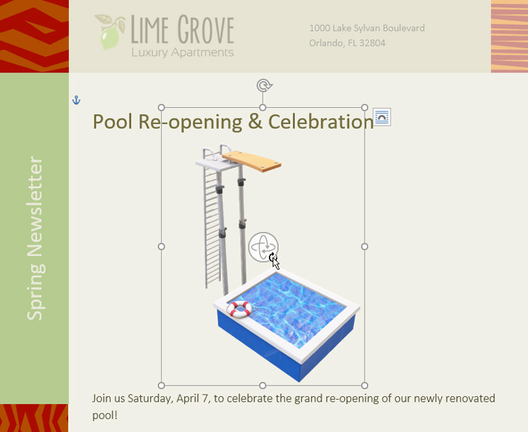
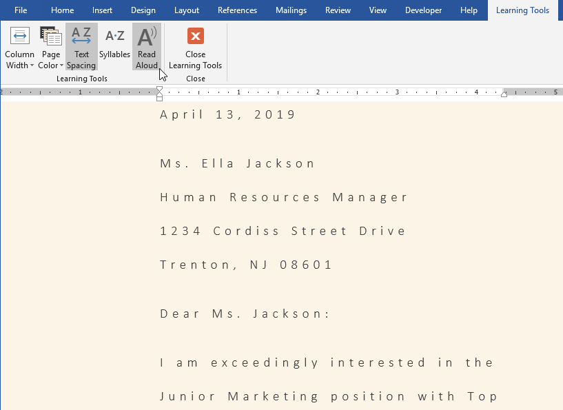
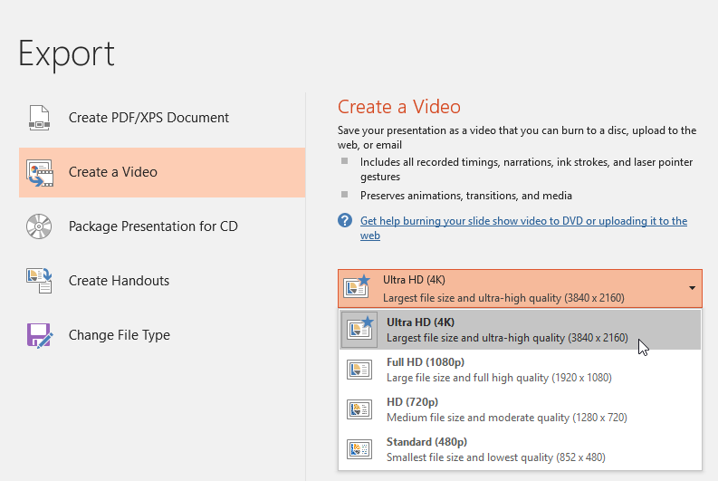
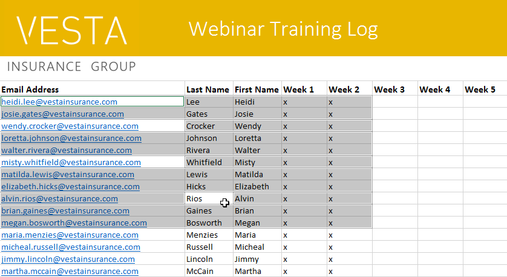

/en/excel/what-is-office-365/content/
Office 2019 được phát hành vào tháng 9 năm 2018. Nếu bạn đã sử dụng Office 2016 hoặc các phiên bản cũ hơn, có thể bạn sẽ thấy Office 2019 quen thuộc. Giao diện tương tự và hầu hết các tính năng vẫn hoạt động như cũ. Tuy nhiên, có một số cải tiến được thiết kế để giúp Office 2019 mạnh mẽ hơn và dễ sử dụng hơn.
Office 2019 chỉ khả dụng cho các máy tính chạyWindows 10hoặc một trongba phiên bản macOS mới nhất.
Xem video bên dưới để tìm hiểu thêm về những cải tiến và tính năng mới của Office 2019.
Office 2019 đi kèm với một số tính năng mới giúp tùy chỉnh hình ảnh cho dự án của bạn. Có một thư viện đồ họa mới có tênBiểu tượngmà bạn có thể sử dụng và tùy chỉnh theo cách bạn muốn. Bạn cũng có thể biến bản vẽ của mình thành các hình dạng tiêu chuẩn bằng cách sử dụng chức năngInk to Shapevà chènmô hình 3D tương tácvào dự án của mình.

Word có một tính năng mới tên làCông cụ Học tậpcó thể giúp văn bản dễ đọc hơn mà không cần thực hiện các thay đổi vĩnh viễn đối với tài liệu của bạn. Bạn có thể thay đổi khoảng cách văn bản, màu trang hoặc thậm chí để Word đọc to văn bản của bạn.

PowerPoint bao gồm chuyển tiếpBiến đổimới cho phép bạn tạo hiệu ứng động cho các đối tượng giữa các trang chiếu trong một khoảng thời gian ngắn. Nếu bạn muốn lưu bản trình bày của mình dưới dạng tệp video thì giờ đây PowerPoint cũng cung cấp cho bạn khả năng xuất bản trình bày của mình ởđộ phân giải 4K.

Có một số loại biểu đồ mới trong Excel:biểu đồ bản đồvàbiểu đồ kênh. Ngoài ra còn có một tính năng được gọi là lựa chọn chính xác, cho phép bạn bỏ chọn từng ô sau khi đã đánh dấu chúng.

Điều quan trọng cần lưu ý là Office 2019không có nhiều tính năng mới như Office 365. Nếu quan tâm đến các bản cập nhật năng động hơn, bạn có thể muốn xem xét Office 365 dựa trên đăng ký thay thế.
Nhiều thay đổi và cải tiến trong Office 2019 tuy nhỏ nhưng có thể giúp tăng năng suất và khả năng sử dụng dễ dàng trong một số trường hợp nhất định.
/en/excel/what-are-reference-styles/content/